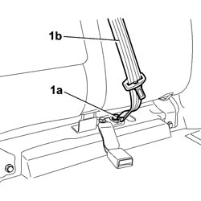
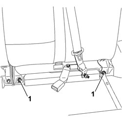
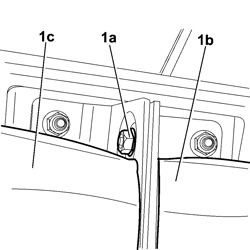
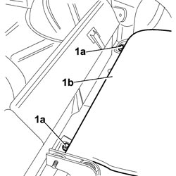

7050A13 SPLIT REAR SEAT LEFT BACKREST - R.R.
- Path
- Procedures > 70 FITTINGS > 7050 REAR SEATS > 7050A REAR SEAT ASSEMBLY > 7050A13 SPLIT REAR SEAT LEFT BACKREST - R.R.
- Kind
- repair procedure (removal / refitting; the operation number is the code)
- Applies to
- all engines; all production periods
- Interactive page
- https://sloeber94.github.io/elrnDB-fCrm/en/#/194001141
Applies to: all engines; all production periods
 Removing
Removing
 Refitting
RefittingOp. 7050A20 ONE-PIECE REAR SEAT CUSHION - R.R.
1. Undo the bolt (1a) securing seat belt (1b).

Applies to: all engines; all production periods
1. Undo the two front bolts fixing the backrest.
Tilt the backrest forward.

Applies to: all engines; all production periods
1. Unscrew nut (1a) of the bolt joining the left backrest (1b) to the right backrest (1c).

Applies to: all engines; all production periods
1. Unscrew both rear nuts (1a) of backrest (1b).
Remove the seat backrest from the vehicle.

Applies to: all engines; all production periods
Refitting
Removing- Check that the seat backrest is not damaged.
- Place the seat backrest in position in the vehicle.
- Fold the seat backrest forward.
- Screw in the two nuts fixing the seat backrest and tighten them to torque.
Component | Fastening | dia | Value (daNm) | Validity |
|---|---|---|---|---|
REAR SEAT BACKREST REAR FASTENING | Nut | M10x1.25 | 3,6 ÷ 4,4 |
- Screw in and tighten the nut on the bolt joining the left backrest to the right backrest and tighten to the specified torque.
Component | Fastening | dia | Value (daNm) | Validity |
|---|---|---|---|---|
REAR SEAT CENTRE BRACKETS | Nut | M10x1.25 | 3,6 ÷ 4,4 |
- Raise the backrest and tighten both front backrest bolts and tighten to the specified torque.
Component | Fastening | dia | Value (daNm) | Validity |
|---|---|---|---|---|
LEFT/RIGHT BAND FASTENING REAR SEAT BASE AND REAR SEAT BACKREST TO CROSSMEMBER | Bolt | M10x1.25 | 3,6 ÷ 4,4 |
Component | Fastening | dia | Value (daNm) | Validity |
|---|---|---|---|---|
REAR SEAT CENTRE BRACKETS | Nut | M10x1.25 | 3,6 ÷ 4,4 |
- Tighten the bolt fixing the seat belt to the recommended torque.
Component | Fastening | dia | Value (daNm) | Validity |
|---|---|---|---|---|
LEFT SIDE REAR SEATS BUCKLE TO CROSSMEMBER | Bolt | M10x1.25x25 | 3,6 ÷ 4,4 |
Topics linked from this page (1)
Topics that link to this page (6)
- O028 REAR SEAT BACKREST ATTACHMENT MISSING
- S015 NOISE WHILST DRIVING
- 5505C41 PASSENGER COMPARTMENT WIRING - R.R
- 7050A30 BRACKET TO FASTEN REAR SEAT BACK (ONE) - R R
- 7050A31 BRACKET TO FASTEN REAR SEAT BACK, (ONE) LH OR RH - R R WITH SEAT BACK TAKEN OFF
- 7050D34 TRIM FOR LEFT REAR SEAT BACKREST (TWO SEATER) - R.R.